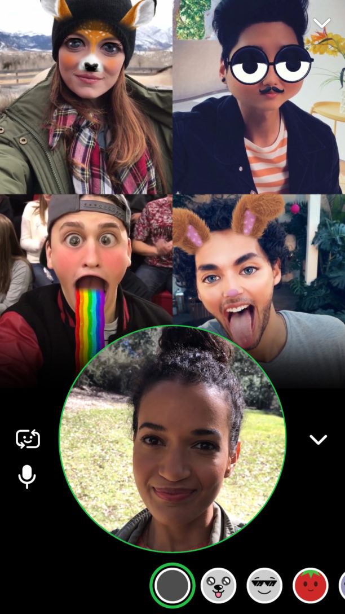
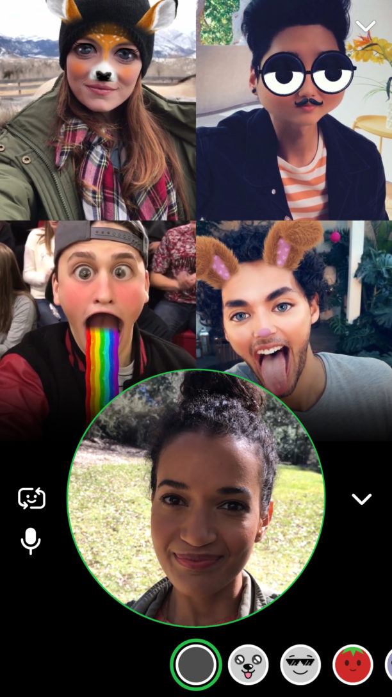
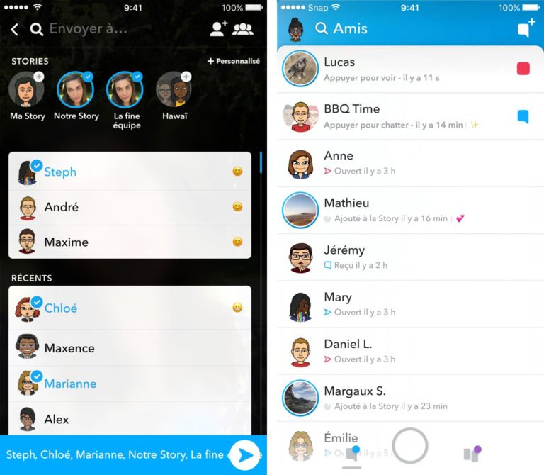
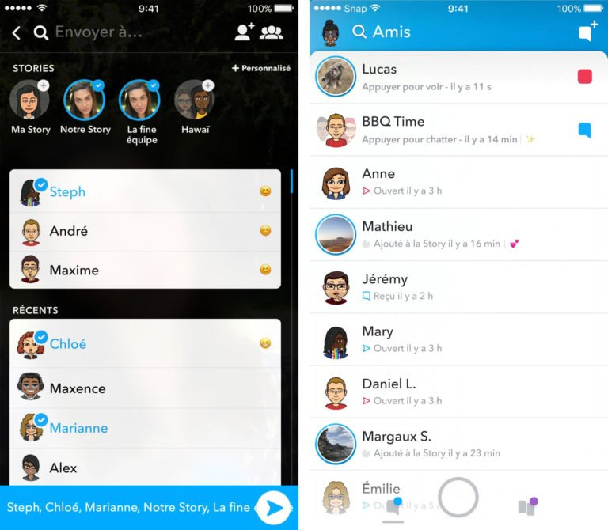
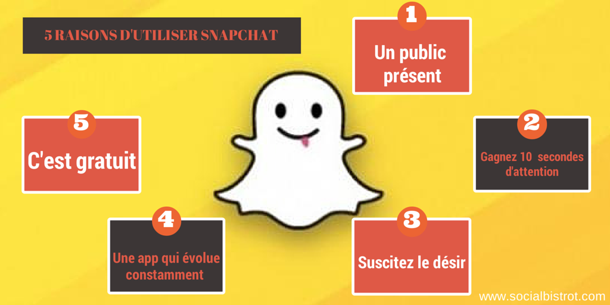

Accueil
Bas de page
Ce que l'on peut faire avec l'application snapchat :
Exemples :
- Les messages privés :
 - Les messages avec plusieurs amis dans un groupe :
- Les messages avec plusieurs amis dans un groupe :
 - Les appels a plusieurs :

- Des filtres qui permettent de vous prendre en photo ou en vidéo avec des objets ou des formes de tête :
- Les appels a plusieurs :

- Des filtres qui permettent de vous prendre en photo ou en vidéo avec des objets ou des formes de tête :
 - Localiser ses amis grâce a la carte snapchat :
- Localiser ses amis grâce a la carte snapchat :
 - Mettre des story que tous vos amis peuvent voir :

- Enregistrer des photos ou des vidéos :
- Mettre des story que tous vos amis peuvent voir :

- Enregistrer des photos ou des vidéos :

Les adolescents utilisent Snapchat également comme un journal de bord, permettant à leurs contacts de savoir ce qu'ils font à toute heure de la journée. Parmi les avantages de Snapchat : il demande un minimum d'effort à la publication de contenu, et il propose un visionnage limité dans le temps et l'anonymat :

MERCI D'AVOIR PRIS LE TEMPS DE LIRE NOS PAGES WEB !
Haut de page